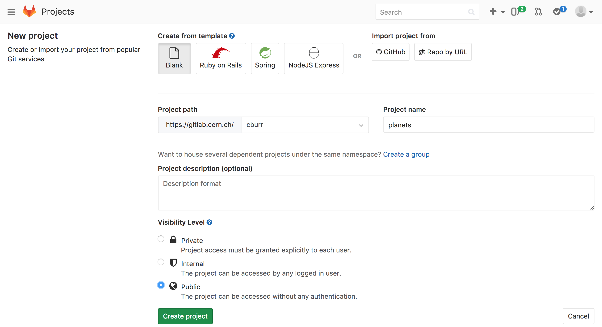
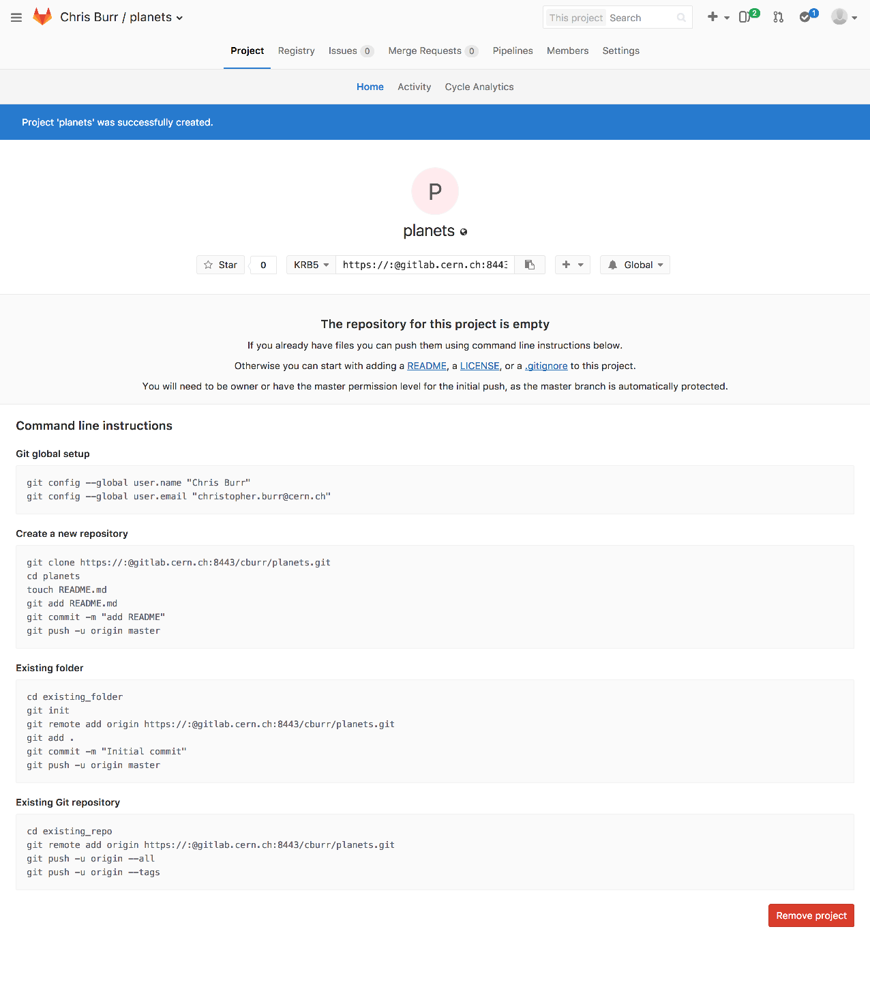
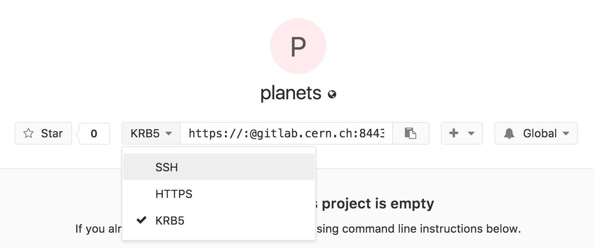
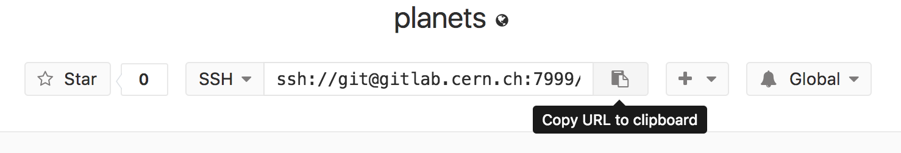

Remotes in CERN GitLab
Learning Objectives
- Explain what remote repositories are and why they are useful.
- Push to or pull from a remote repository.
Prerequisites
- A SSH Key added to your CERN GitLab account, see here for instructions.
- You can test if this is working by runnning
ssh git@gitlab.cern.ch -T -p 7999. Everything is working correctly if the output of the command is:
Welcome to GitLab, Santa Claus!
Version control really comes into its own when we begin to collaborate with other people. We already have most of the machinery we need to do this; the only thing missing is to copy changes from one repository to another.
Systems like Git allow us to move work between any two repositories. In practice, though, it's easiest to use one copy as a central hub, and to keep it on the web rather than on someone's laptop. Most programmers use hosting services like GitHub, BitBucket or GitLab to hold those master copies. All of these services are the same from the perspective of the git command line however each provider's website offers slightly different features. In this lesson we will use CERN's instance of GitLab. This is the similar to the public GitLab instance except it is hosted by CERN and is integrated with various CERN services such as Single Sign On and JIRA.
Let's start by sharing the changes we've made to our current project with the
world. Log in to CERN GitLab, then click on the +
icon in the top right and create a new project called planets:
Name your repository "planets" and then click "Create project":

Here we can see one of the main reasons why you might want to use GitLab at CERN instead of an external service: every CERN user can create a private repository, meaning its access can be restricted to the persons you want. External services such as GitHub only allow you to create public repositories unless you pay for it. Note that private repositories are very useful when collaborating for a paper.
As soon as the repository is created, GitLab displays a page with a URL and some information on how to configure your local repository:

This is roughly equivalent to perform the following on CERN's servers:
$ mkdir planets
$ cd planets
$ git init --bare
Our local repository still contains our earlier work on mars.txt, but the
remote repository on CERN GitLab doesn't contain any files yet:

The next step is to connect the two repositories. We do this by making the GitLab repository a remote for the local repository. The home page of the repository on GitLab includes the string we need to identify it:

Click on the 'SSH' link to change the protocol from
KRB5 to SSH and then copy that URL from the browser, go into the local planets
repository, and run this command:
$ git remote add origin ssh://git@gitlab.cern.ch:7999/vlad/planets.git
Make sure to use the URL for your repository rather than Vlad's: the only
difference should be your username instead of vlad.
We can check that the command has worked by running git remote -v:
$ git remote -v
origin ssh://git@gitlab.cern.ch:7999/vlad/planets.git (fetch)
origin ssh://git@gitlab.cern.ch:7999/vlad/planets.git (push)
The name origin is a local nickname for your remote repository. We could use
something else if we wanted to, but origin is by far the most common choice.
Once the nickname origin is set up, this command will push the changes from
our local repository to the repository on GitLab:
$ git push origin master
Counting objects: 9, done.
Delta compression using up to 4 threads.
Compressing objects: 100% (6/6), done.
Writing objects: 100% (9/9), 821 bytes, done.
Total 9 (delta 2), reused 0 (delta 0)
To ssh://gitlab.cern.ch:7999/vlad/planets.git
* [new branch] master -> master
Branch master set up to track remote branch master from origin.
Our local and remote repositories are now in this state:

The '-u' Flag
You may see a -u option used with git push in some documentation. This
option is synonymous with the --set-upstream-to option for the git branch
command, and is used to associate the current branch with a remote branch so
that the git pull command can be used without any arguments. To do this,
simply use git push -u origin master once the remote has been set up.
We can pull changes from the remote repository to the local one as well:
$ git pull origin master
From https://gitlab.cern.ch/vlad/planets
* branch master -> FETCH_HEAD
Already up-to-date.
Pulling has no effect in this case because the two repositories are already synchronized. If someone else had pushed some changes to the repository on GitLab, though, this command would download them to our local repository.
GitLab GUI
Browse to your planets repository on GitLab.
Under the "Project" tab, find and click on the text that says "XX commits"
(where "XX" is some number).
Hover over, and click on, the three buttons to the right of each commit.
What information can you gather/explore from these buttons?
How would you get that same information in the shell?
SolutionClick to expand
GitLab Timestamp
Create a remote repository on GitLab. Push the contents of your local repository to the remote. Make changes to your local repository and push these changes. Go to the repo you just created on GitLab and check the timestamps of the files. How does GitLab record times, and why?
SolutionClick to expand
Push vs. Commit
In this lesson, we introduced the "git push" command. How is "git push" different from "git commit"?
SolutionClick to expand
Fixing Remote Settings
It happens quite often in practice that you made a typo in the remote URL. This exercise is about how to fix this kind of issues. First start by adding a remote with an invalid URL:
git remote add broken https://gitlab.cern.ch/this/url/is/invalid
Do you get an error when adding the remote? Can you think of a
command that would make it obvious that your remote URL was not
valid? Can you figure out how to fix the URL (tip: use git remote
-h)? Don't forget to clean up and remove this remote once you are
done with this exercise.
SolutionClick to expand
Key Points
- A local Git repository can be connected to one or more remote repositories.
- Use the SSH protocol to connect to remote repositories.
git pushcopies changes from a local repository to a remote repository.git pullcopies changes from a remote repository to a local repository.
CC BY 4.0 - Based on git-novice © 2016–2017 Software Carpentry Foundation